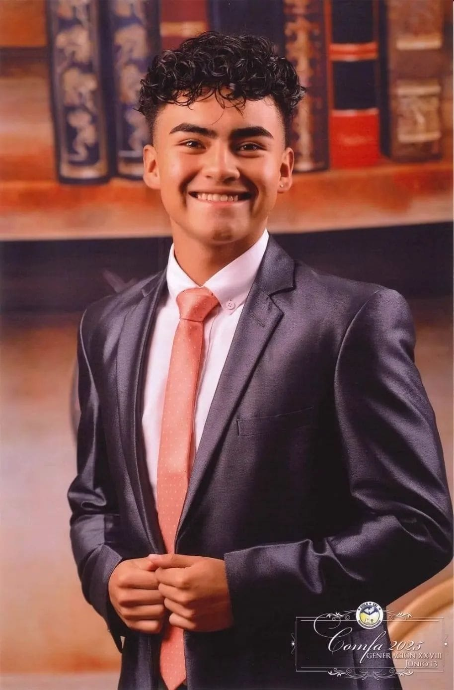

Mi perfil
Hola, soy aprendiz de Análisis y Desarrollo de Software en el SENA. Me interesa la tecnología y quiero aprender a crear páginas web y programas.
Mi objetivo es mejorar mis conocimientos y desarrollar proyectos que me ayuden a crecer profesionalmente.
Creo que la práctica y la constancia son importantes para aprender programación.
